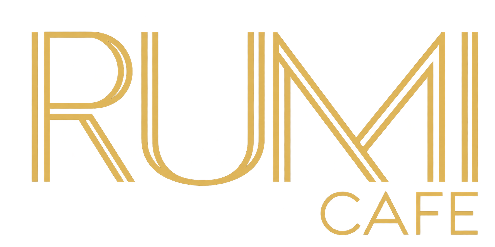
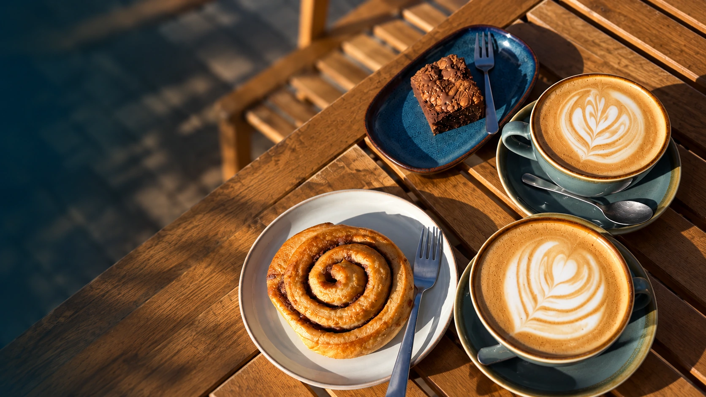
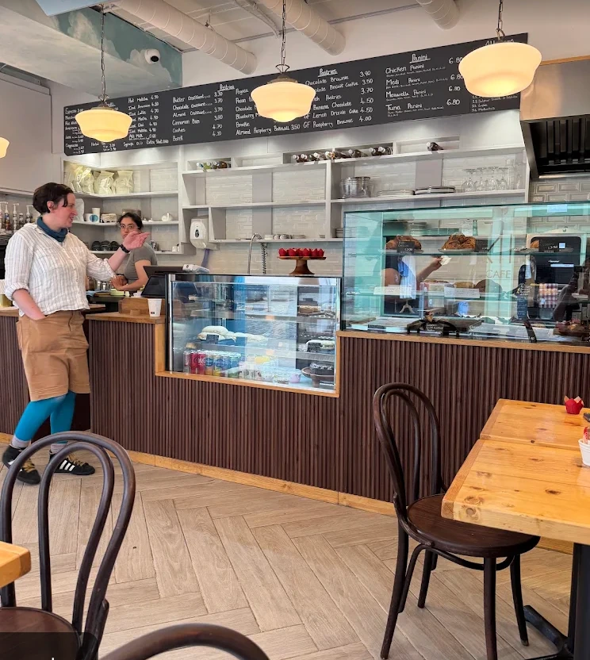
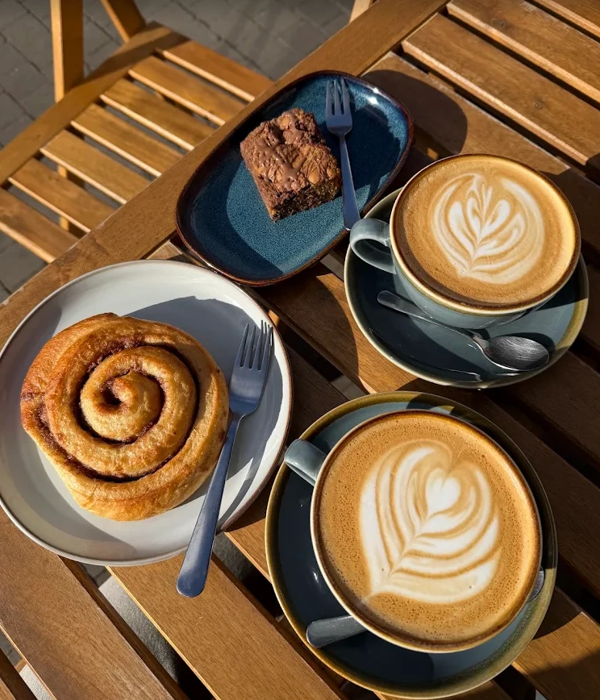
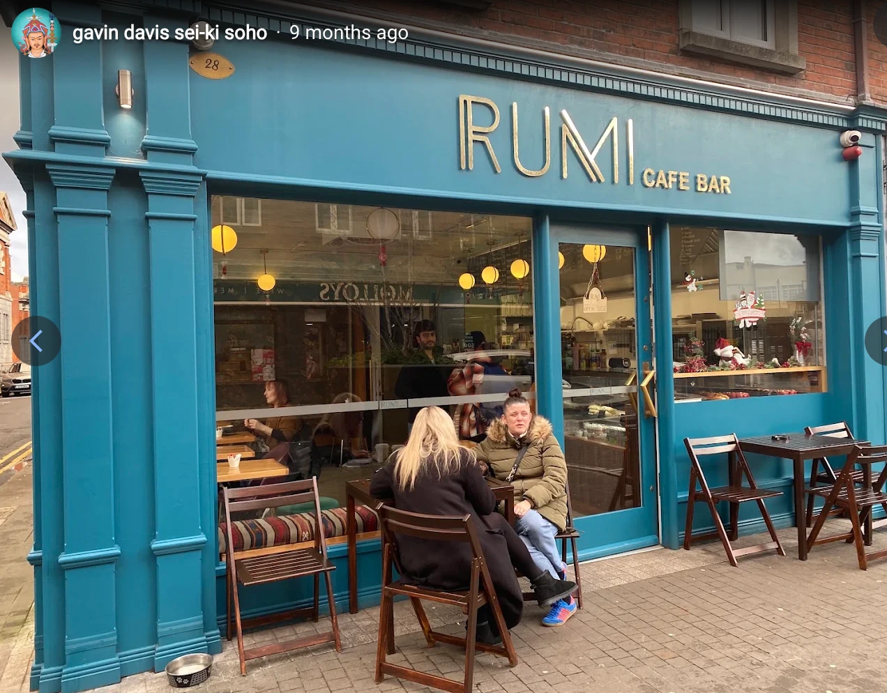
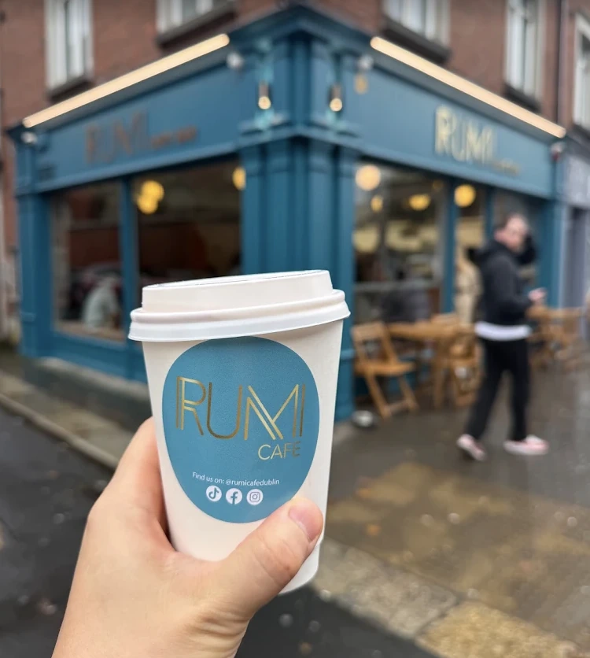
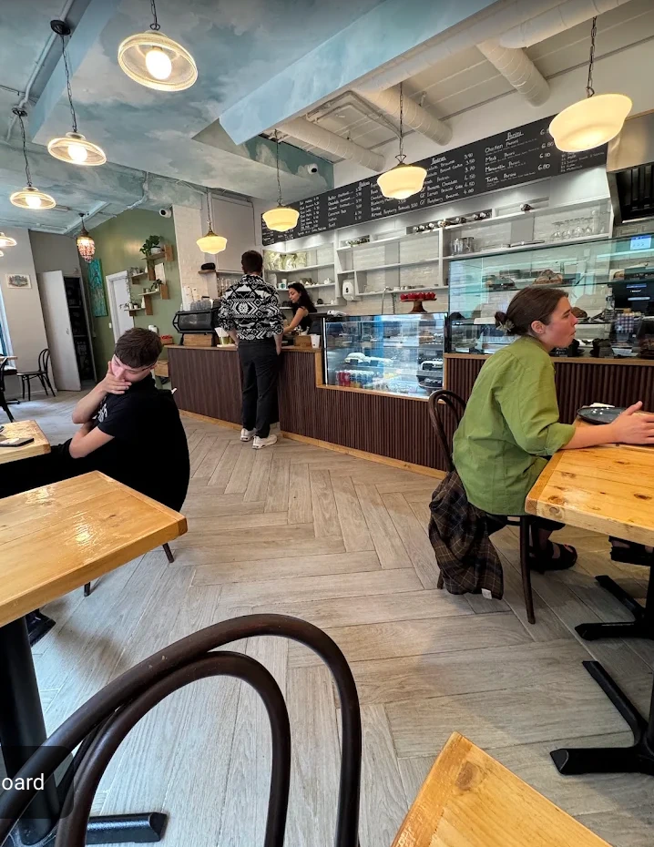

Good coffee.
Familiar faces.
Stay
a little.
A neighbourhood café on Francis Street. Speciality coffee, something sweet and a warm welcome in Dublin 8.
Take a look around
Francis Street · Dublin 8
A little corner of Dublin.
Coffee, company &
a little sweetness.

Good coffee.
Familiar faces.
A neighbourhood café on Francis Street. Speciality coffee, something sweet and a warm welcome in Dublin 8.
Take a look around
Coffee, then a little something.
Take your time. Find your favourite coffee and see what's on the counter today.

Our little corner of Dublin

A little Rumi, on the go.From Francis Street, with warmth.
For Francis Street moments, coffee and whatever's on the counter, follow @rumicafedublin.
Follow Rumi